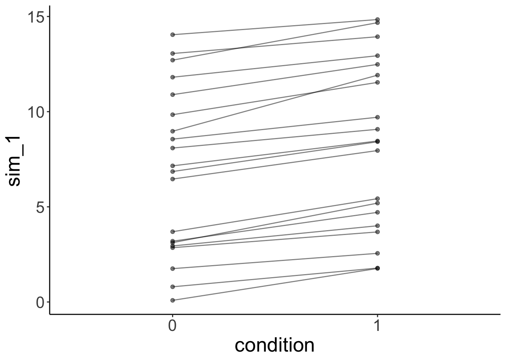
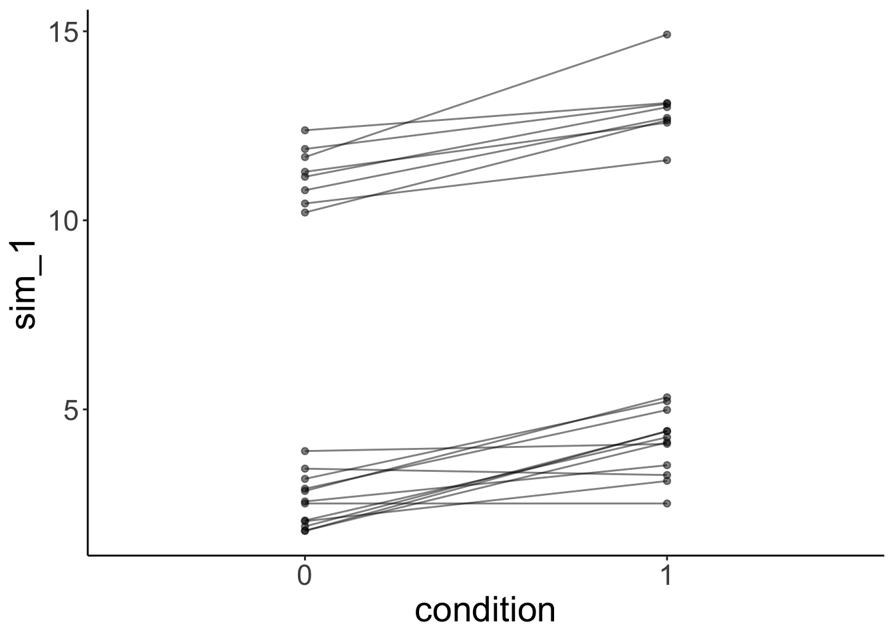
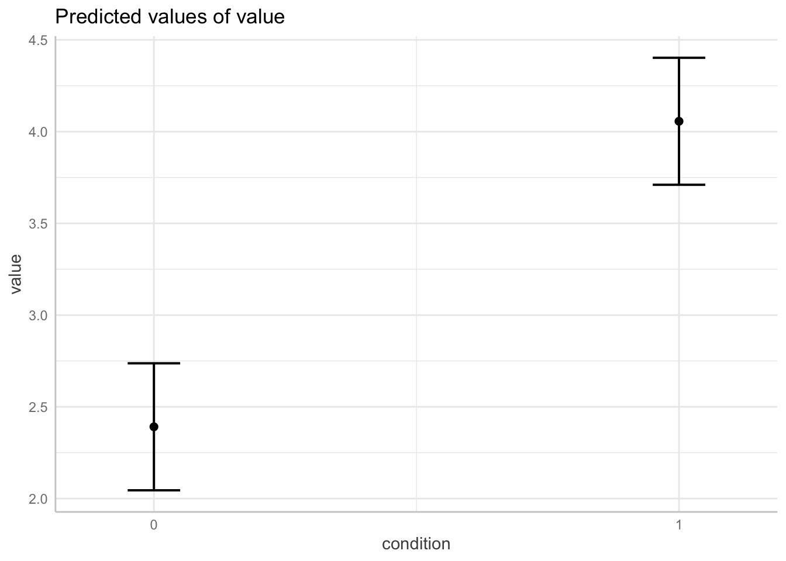
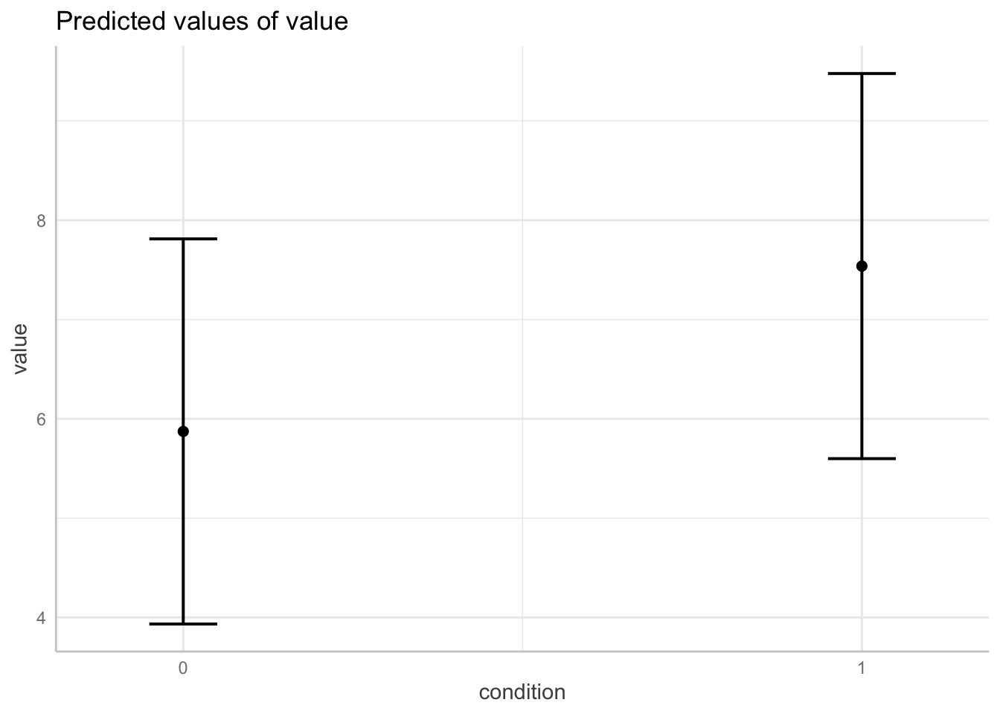
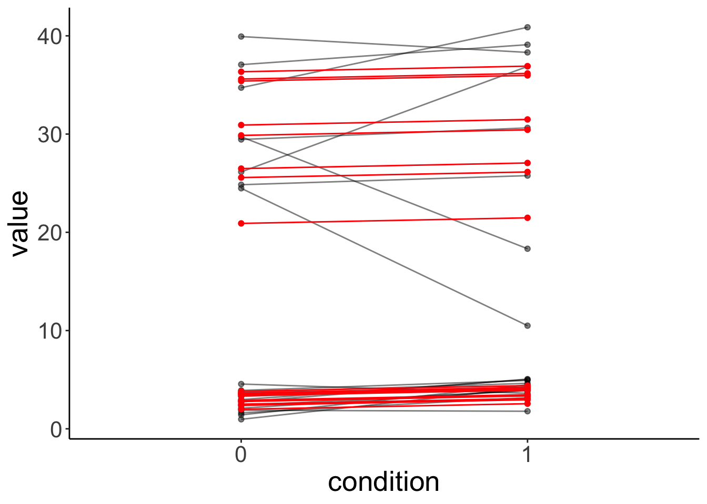
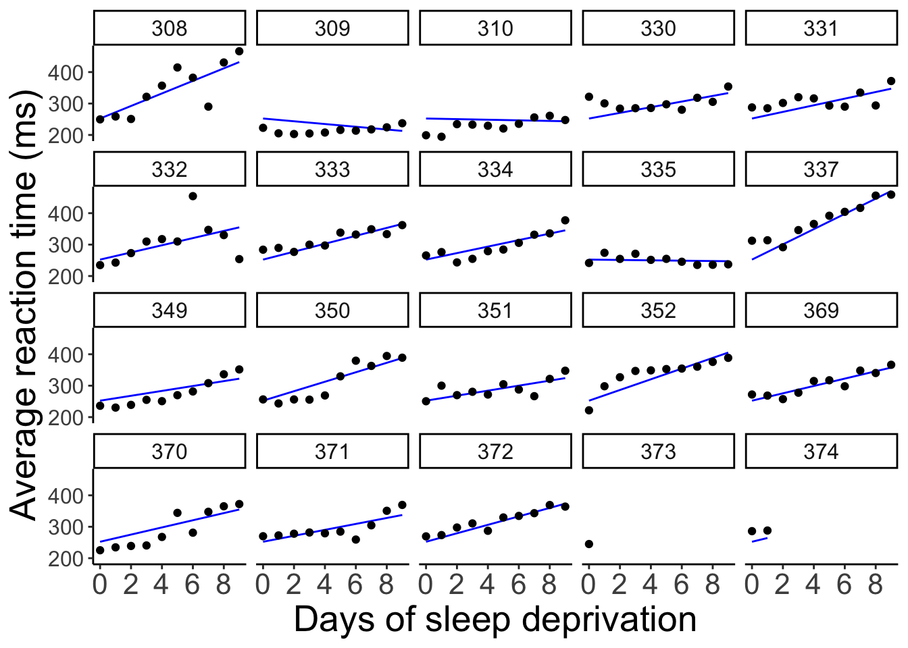
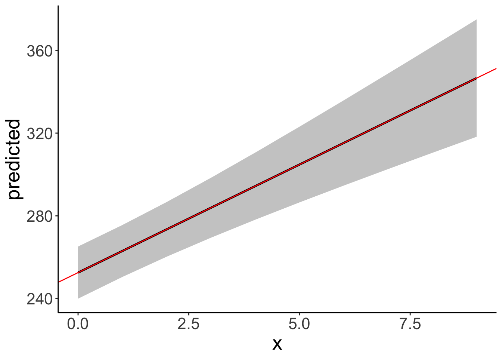
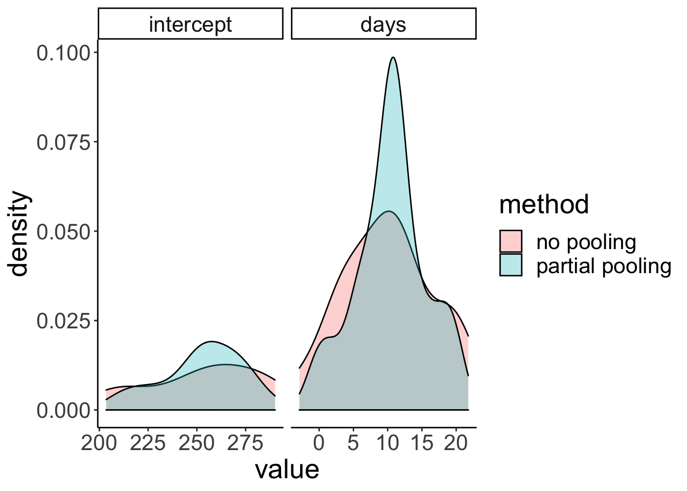
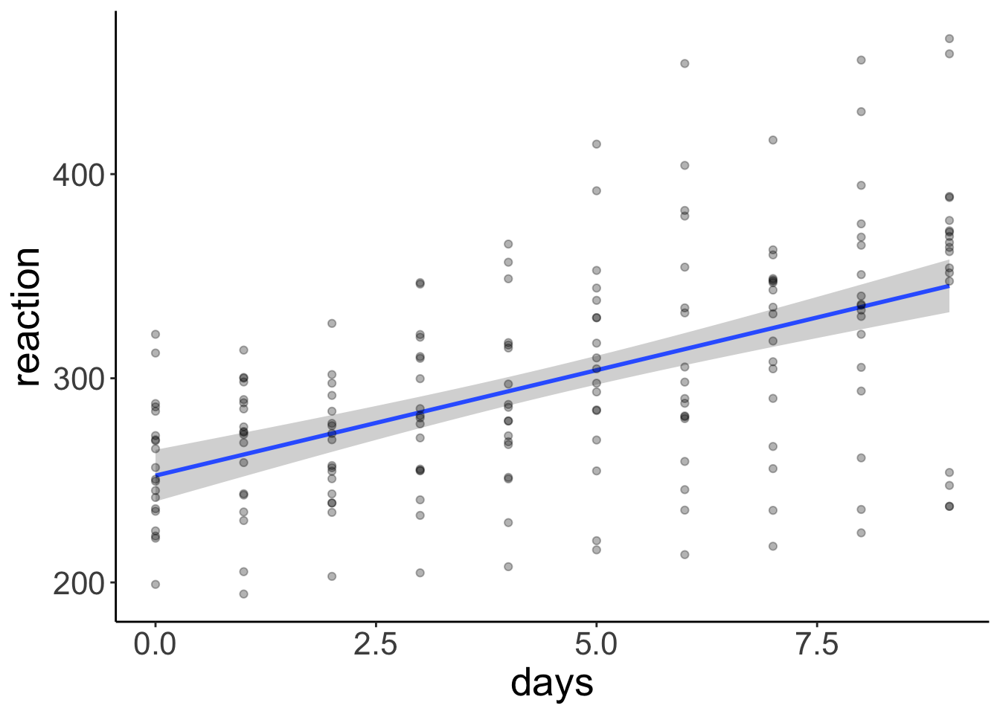

Chapter 19 Linear mixed effects models 3
19.1 Learning goals
- Bootstrapping linear mixed effects models.
- Getting p-values.
- Pitfalls in fitting
lmers()s (and what to do about it). - Understanding
lmer()syntax even better.
19.2 Load packages and set plotting theme
library("knitr") # for knitting RMarkdown
library("kableExtra") # for making nice tables
library("janitor") # for cleaning column names
library("broom") # for tidying up linear models
library("broom.mixed") # for tidying up linear mixed effects models
library("patchwork") # for making figure panels
library("lme4") # for linear mixed effects models
library("modelr") # for bootstrapping
library("boot") # also for bootstrapping
library("ggeffects") # for plotting marginal effects
library("tidyverse") # for wrangling, plotting, etc.
# include references for used packages
knitr::write_bib(.packages(), "packages.bib") 19.3 Load data set
19.4 Mixtures of participants
What if we have groups of participants who differ from each other? Let’s generate data for which this is the case.
# make example reproducible
set.seed(1)
sample_size = 20
b0 = 1
b1 = 2
sd_residual = 0.5
sd_participant = 0.5
mean_group1 = 1
mean_group2 = 10
df.mixed = tibble(
condition = rep(0:1, each = sample_size),
participant = rep(1:sample_size, 2)) %>%
group_by(participant) %>%
mutate(group = sample(1:2, size = 1),
intercept = ifelse(group == 1,
rnorm(n(), mean = mean_group1, sd = sd_participant),
rnorm(n(), mean = mean_group2, sd = sd_participant))) %>%
group_by(condition) %>%
mutate(value = b0 + b1 * condition + intercept + rnorm(n(), sd = sd_residual)) %>%
ungroup %>%
mutate(condition = as.factor(condition),
participant = as.factor(participant))19.4.0.1 Ignoring mixture
Let’ first fit a model that ignores the fact that there are two different groups of participatns.
# fit model
fit.mixed = lmer(formula = value ~ 1 + condition + (1 | participant),
data = df.mixed)
fit.mixed %>% summary()## Linear mixed model fit by REML ['lmerMod']
## Formula: value ~ 1 + condition + (1 | participant)
## Data: df.mixed
##
## REML criterion at convergence: 163.5
##
## Scaled residuals:
## Min 1Q Median 3Q Max
## -1.62997 -0.41663 -0.05607 0.54750 1.54023
##
## Random effects:
## Groups Name Variance Std.Dev.
## participant (Intercept) 19.2206 4.3841
## Residual 0.3521 0.5934
## Number of obs: 40, groups: participant, 20
##
## Fixed effects:
## Estimate Std. Error t value
## (Intercept) 5.8729 0.9893 5.937
## condition1 1.6652 0.1876 8.875
##
## Correlation of Fixed Effects:
## (Intr)
## condition1 -0.095Let’s look at the model’s predictions:
fit.mixed %>%
augment() %>%
clean_names() %>%
ggplot(data = .,
mapping = aes(x = condition,
y = value,
group = participant)) +
geom_point(alpha = 0.5) +
geom_line(alpha = 0.5) +
geom_point(aes(y = fitted),
color = "red") +
geom_line(aes(y = fitted),
color = "red")
And let’s simulate some data from the fitted model:
# simulated data
fit.mixed %>%
simulate() %>%
bind_cols(df.mixed) %>%
ggplot(data = .,
mapping = aes(x = condition,
y = sim_1,
group = participant)) +
geom_line(alpha = 0.5) +
geom_point(alpha = 0.5)
As we can see, the simulated data doesn’t look like the data that was used to fit the model.
19.4.0.2 Modeling mixture
Now, let’s fit a model that takes the differences between groups into account by adding a fixed effect for group.
# fit model
fit.grouped = lmer(formula = value ~ 1 + group + condition + (1 | participant),
data = df.mixed)
fit.grouped %>% summary()## Linear mixed model fit by REML ['lmerMod']
## Formula: value ~ 1 + group + condition + (1 | participant)
## Data: df.mixed
##
## REML criterion at convergence: 82.2
##
## Scaled residuals:
## Min 1Q Median 3Q Max
## -1.61879 -0.61378 0.02557 0.49842 2.19076
##
## Random effects:
## Groups Name Variance Std.Dev.
## participant (Intercept) 0.09265 0.3044
## Residual 0.35208 0.5934
## Number of obs: 40, groups: participant, 20
##
## Fixed effects:
## Estimate Std. Error t value
## (Intercept) -6.3136 0.3633 -17.381
## group 8.7046 0.2366 36.791
## condition1 1.6652 0.1876 8.875
##
## Correlation of Fixed Effects:
## (Intr) group
## group -0.912
## condition1 -0.258 0.000Note how the variance of the random intercepts is much smaller now that we’ve taken the group structure in the data into account.
Let’s visualize the model’s predictions:
fit.grouped %>%
augment() %>%
clean_names() %>%
ggplot(data = .,
mapping = aes(x = condition,
y = value,
group = participant)) +
geom_point(alpha = 0.5) +
geom_line(alpha = 0.5) +
geom_point(aes(y = fitted),
color = "red") +
geom_line(aes(y = fitted),
color = "red")
And simulate some data from the model:
# simulated data
fit.grouped %>%
simulate() %>%
bind_cols(df.mixed) %>%
ggplot(data = .,
mapping = aes(x = condition,
y = sim_1,
group = participant)) +
geom_line(alpha = 0.5) +
geom_point(alpha = 0.5)
This time, the simulated data looks much more like the data that was used to fit the model. Yay!


19.4.0.3 Heterogeneity in variance
The example above has shown that we can take overall differences between groups into account by adding a fixed effect. Can we also deal with heterogeneity in variance between groups? For example, what if the responses of one group exhibit much more variance than the responses of another group?
Let’s first generate some data with heterogeneous variance:
# make example reproducible
set.seed(1)
sample_size = 20
b0 = 1
b1 = 2
sd_residual = 0.5
mean_group1 = 1
sd_group1 = 1
mean_group2 = 30
sd_group2 = 10
df.variance = tibble(
condition = rep(0:1, each = sample_size),
participant = rep(1:sample_size, 2)) %>%
group_by(participant) %>%
mutate(group = sample(1:2, size = 1),
intercept = ifelse(group == 1,
rnorm(n(), mean = mean_group1, sd = sd_group1),
rnorm(n(), mean = mean_group2, sd = sd_group2))) %>%
group_by(condition) %>%
mutate(value = b0 + b1 * condition + intercept + rnorm(n(), sd = sd_residual)) %>%
ungroup %>%
mutate(condition = as.factor(condition),
participant = as.factor(participant))Let’s fit the model:
# fit model
fit.variance = lmer(formula = value ~ 1 + group + condition + (1 | participant),
data = df.variance)
fit.variance %>% summary()## Linear mixed model fit by REML ['lmerMod']
## Formula: value ~ 1 + group + condition + (1 | participant)
## Data: df.variance
##
## REML criterion at convergence: 232.7
##
## Scaled residuals:
## Min 1Q Median 3Q Max
## -2.96291 -0.19619 0.03751 0.28317 1.45552
##
## Random effects:
## Groups Name Variance Std.Dev.
## participant (Intercept) 17.12 4.137
## Residual 13.74 3.706
## Number of obs: 40, groups: participant, 20
##
## Fixed effects:
## Estimate Std. Error t value
## (Intercept) -24.0018 3.3669 -7.129
## group 27.0696 2.2353 12.110
## condition1 0.5716 1.1720 0.488
##
## Correlation of Fixed Effects:
## (Intr) group
## group -0.929
## condition1 -0.174 0.000Look at the data and model predictions:
fit.variance %>%
augment() %>%
clean_names() %>%
ggplot(data = .,
mapping = aes(x = condition,
y = value,
group = participant)) +
geom_point(alpha = 0.5) +
geom_line(alpha = 0.5) +
geom_point(aes(y = fitted),
color = "red") +
geom_line(aes(y = fitted),
color = "red")
And the simulated data:
# simulated data
fit.variance %>%
simulate() %>%
bind_cols(df.mixed) %>%
ggplot(data = .,
mapping = aes(x = condition,
y = sim_1,
group = participant)) +
geom_line(alpha = 0.5) +
geom_point(alpha = 0.5)
The lmer() fails here. It uses one normal distribution to model the variance between participants. It cannot account for the fact that the answers of one group of participants vary more than the answers from another groups of participants. Again, the simulated data doesn’t look like the original data, even though we did take the grouping into account.
19.5 Pooling and shrinkage
Let’s illustrate the concept of pooling and shrinkage via the sleep data set that comes with the lmer package. We’ve already loaded the data set into our environment as df.sleep.
Let’s start by visualizing the data
# visualize the data
ggplot(data = df.sleep,
mapping = aes(x = days, y = reaction)) +
geom_point() +
facet_wrap(~subject, ncol = 5) +
labs(x = "Days of sleep deprivation",
y = "Average reaction time (ms)") +
scale_x_continuous(breaks = 0:4 * 2) +
theme(strip.text = element_text(size = 12),
axis.text.y = element_text(size = 12))
The plot shows the effect of the number of days of sleep deprivation on the average reaction time (presumably in an experiment). Note that for participant 373 and 374 we only have one and two data points respectively.
19.5.1 Complete pooling
Let’s first fit a model the simply combines all the data points. This model ignores the dependence structure in the data (i.e. the fact that we have repeated observations from the same participants).
fit.complete = lm(formula = reaction ~ days,
data = df.sleep)
fit.params = tidy(fit.complete)
fit.complete %>%
summary()##
## Call:
## lm(formula = reaction ~ days, data = df.sleep)
##
## Residuals:
## Min 1Q Median 3Q Max
## -110.646 -27.951 1.829 26.388 139.875
##
## Coefficients:
## Estimate Std. Error t value Pr(>|t|)
## (Intercept) 252.321 6.406 39.389 < 2e-16 ***
## days 10.328 1.210 8.537 5.48e-15 ***
## ---
## Signif. codes: 0 '***' 0.001 '**' 0.01 '*' 0.05 '.' 0.1 ' ' 1
##
## Residual standard error: 47.43 on 181 degrees of freedom
## Multiple R-squared: 0.2871, Adjusted R-squared: 0.2831
## F-statistic: 72.88 on 1 and 181 DF, p-value: 5.484e-15And let’s visualize the predictions of this model.
# visualization (aggregate)
ggplot(data = df.sleep,
mapping = aes(x = days, y = reaction)) +
geom_abline(intercept = fit.params$estimate[1],
slope = fit.params$estimate[2],
color = "blue") +
geom_point() +
labs(x = "Days of sleep deprivation",
y = "Average reaction time (ms)") +
scale_x_continuous(breaks = 0:4 * 2) +
theme(strip.text = element_text(size = 12),
axis.text.y = element_text(size = 12))
And here is what the model’s predictions look like separated by participant.
# visualization (separate participants)
ggplot(data = df.sleep,
mapping = aes(x = days, y = reaction)) +
geom_abline(intercept = fit.params$estimate[1],
slope = fit.params$estimate[2],
color = "blue") +
geom_point() +
facet_wrap(~subject, ncol = 5) +
labs(x = "Days of sleep deprivation",
y = "Average reaction time (ms)") +
scale_x_continuous(breaks = 0:4 * 2) +
theme(strip.text = element_text(size = 12),
axis.text.y = element_text(size = 12))
The model predicts the same relationship between sleep deprivation and reaction time for each participant (not surprising since we didn’t even tell the model that this data is based on different participants).
19.5.2 No pooling
We could also fit separate regressions for each participant. Let’s do that.
# fit regressions and extract parameter estimates
df.no_pooling = df.sleep %>%
group_by(subject) %>%
nest(data = c(days, reaction)) %>%
mutate(fit = map(data, ~ lm(reaction ~ days, data = .)),
params = map(fit, tidy)) %>%
ungroup() %>%
unnest(c(params)) %>%
select(subject, term, estimate) %>%
complete(subject, term, fill = list(estimate = 0)) %>%
pivot_wider(names_from = term,
values_from = estimate) %>%
clean_names()And let’s visualize what the predictions of these separate regressions would look like:
ggplot(data = df.sleep,
mapping = aes(x = days,
y = reaction)) +
geom_abline(data = df.no_pooling %>%
filter(subject != 373),
aes(intercept = intercept,
slope = days),
color = "blue") +
geom_point() +
facet_wrap(~subject, ncol = 5) +
labs(x = "Days of sleep deprivation",
y = "Average reaction time (ms)") +
scale_x_continuous(breaks = 0:4 * 2) +
theme(strip.text = element_text(size = 12),
axis.text.y = element_text(size = 12))
When we fit separate regression, no information is shared between participants.
19.5.3 Partial pooling
By usign linear mixed effects models, we are partially pooling information. That is, the estimates for one participant are influenced by the rest of the participants.
We’ll fit a number of mixed effects models that differ in their random effects structure.
19.5.3.1 Random intercept and random slope
This model allows for random differences in the intercepts and slopes between subjects (and also models the correlation between intercepts and slopes).
Let’s fit the model
fit.random_intercept_slope = lmer(formula = reaction ~ 1 + days + (1 + days | subject),
data = df.sleep)and take a look at the model’s predictions:
fit.random_intercept_slope %>%
augment() %>%
clean_names() %>%
ggplot(data = .,
mapping = aes(x = days,
y = reaction)) +
geom_line(aes(y = fitted),
color = "blue") +
geom_point() +
facet_wrap(~subject, ncol = 5) +
labs(x = "Days of sleep deprivation",
y = "Average reaction time (ms)") +
scale_x_continuous(breaks = 0:4 * 2) +
theme(strip.text = element_text(size = 12),
axis.text.y = element_text(size = 12))## geom_path: Each group consists of only one observation. Do you need to adjust
## the group aesthetic?
As we can see, the lines for each participant are different. We’ve allowed for the intercept as well as the relationship between sleep deprivation and reaction time to be different between participants.
19.5.3.2 Only random intercepts
Let’s fit a model that only allows for the intercepts to vary between participants.
And let’s visualize what these predictions look like:
fit.random_intercept %>%
augment() %>%
clean_names() %>%
ggplot(data = .,
mapping = aes(x = days,
y = reaction)) +
geom_line(aes(y = fitted),
color = "blue") +
geom_point() +
facet_wrap(~subject, ncol = 5) +
labs(x = "Days of sleep deprivation",
y = "Average reaction time (ms)") +
scale_x_continuous(breaks = 0:4 * 2) +
theme(strip.text = element_text(size = 12),
axis.text.y = element_text(size = 12))## geom_path: Each group consists of only one observation. Do you need to adjust
## the group aesthetic?
Now, all the lines are parallel but the intercept differs between participants.
19.5.3.3 Only random slopes
Finally, let’s compare a model that only allows for the slopes to differ but not the intercepts.
And let’s visualize the model fit:
fit.random_slope %>%
augment() %>%
clean_names() %>%
ggplot(data = .,
mapping = aes(x = days,
y = reaction)) +
geom_line(aes(y = fitted),
color = "blue") +
geom_point() +
facet_wrap(vars(subject), ncol = 5) +
labs(x = "Days of sleep deprivation",
y = "Average reaction time (ms)") +
scale_x_continuous(breaks = 0:4 * 2) +
theme(strip.text = element_text(size = 12),
axis.text.y = element_text(size = 12))## geom_path: Each group consists of only one observation. Do you need to adjust
## the group aesthetic?
Here, all the lines have the same starting point (i.e. the same intercept) but the slopes are different.
19.5.4 Compare results
Let’s compare the results of the different methods – complete pooling, no pooling, and partial pooling (with random intercepts and slopes).
# complete pooling
fit.complete_pooling = lm(formula = reaction ~ days,
data = df.sleep)
df.complete_pooling = fit.complete_pooling %>%
augment() %>%
bind_rows(fit.complete_pooling %>%
augment(newdata = tibble(subject = c("373", "374"),
days = rep(10, 2)))) %>%
clean_names() %>%
select(reaction, days, complete_pooling = fitted)
# no pooling
df.no_pooling = df.sleep %>%
group_by(subject) %>%
nest(data = c(days, reaction)) %>%
mutate(fit = map(data, ~ lm(reaction ~ days, data = .)),
augment = map(fit, augment)) %>%
unnest(c(augment)) %>%
ungroup() %>%
clean_names() %>%
select(subject, reaction, days, no_pooling = fitted)
# partial pooling
fit.lmer = lmer(formula = reaction ~ 1 + days + (1 + days | subject),
data = df.sleep)
df.partial_pooling = fit.lmer %>%
augment() %>%
bind_rows(fit.lmer %>%
augment(newdata = tibble(subject = c("373", "374"),
days = rep(10, 2)))) %>%
clean_names() %>%
select(subject, reaction, days, partial_pooling = fitted)
# combine results
df.pooling = df.partial_pooling %>%
left_join(df.complete_pooling) %>%
left_join(df.no_pooling)Let’s compare the predictions of the different models visually:
ggplot(data = df.pooling,
mapping = aes(x = days,
y = reaction)) +
geom_smooth(method = "lm",
se = F,
color = "orange",
fullrange = T) +
geom_line(aes(y = complete_pooling),
color = "green") +
geom_line(aes(y = partial_pooling),
color = "blue") +
geom_point() +
facet_wrap(~subject, ncol = 5) +
labs(x = "Days of sleep deprivation",
y = "Average reaction time (ms)") +
scale_x_continuous(breaks = 0:4 * 2) +
theme(strip.text = element_text(size = 12),
axis.text.y = element_text(size = 12))## `geom_smooth()` using formula 'y ~ x'## Warning: Removed 4 rows containing non-finite values (stat_smooth).## Warning: Removed 4 rows containing missing values (geom_point).
To better see the differences between the approaches, let’s focus on the predictions for the participants with incomplete data:
# subselection
ggplot(data = df.pooling %>%
filter(subject %in% c("373", "374")),
mapping = aes(x = days,
y = reaction)) +
geom_smooth(method = "lm",
se = F,
color = "orange",
fullrange = T) +
geom_line(aes(y = complete_pooling),
color = "green") +
geom_line(aes(y = partial_pooling),
color = "blue") +
geom_point() +
facet_wrap(vars(subject)) +
labs(x = "Days of sleep deprivation",
y = "Average reaction time (ms)") +
scale_x_continuous(breaks = 0:4 * 2) +
theme(strip.text = element_text(size = 12),
axis.text.y = element_text(size = 12))## `geom_smooth()` using formula 'y ~ x'## Warning: Removed 4 rows containing non-finite values (stat_smooth).## Warning: Removed 4 rows containing missing values (geom_point).
df.plot = ggpredict(model = fit.lmer,
terms = "days")
tmp = fit.lmer %>%
tidy(effects = c("ran_pars", "ran_vals", "fixed"))
ggplot(data = df.plot,
mapping = aes(x = x,
y = predicted)) +
geom_ribbon(mapping = aes(ymin = conf.low,
ymax = conf.high),
fill = "gray80") +
geom_line(size = 1) +
geom_abline(intercept = tmp$estimate[1],
slope = tmp$estimate[2],
color = "red")
19.5.5 Coefficients
One good way to get a sense for what the different models are doing is by taking a look at the coefficients:
## (Intercept) days
## 252.32070 10.32766## $subject
## (Intercept) days
## 308 292.2749 10.43191
## 309 174.0559 10.43191
## 310 188.7454 10.43191
## 330 256.0247 10.43191
## 331 261.8141 10.43191
## 332 259.8262 10.43191
## 333 268.0765 10.43191
## 334 248.6471 10.43191
## 335 206.5096 10.43191
## 337 323.5643 10.43191
## 349 230.5114 10.43191
## 350 265.6957 10.43191
## 351 243.7988 10.43191
## 352 287.8850 10.43191
## 369 258.6454 10.43191
## 370 245.2931 10.43191
## 371 248.3508 10.43191
## 372 269.6861 10.43191
## 373 248.2086 10.43191
## 374 273.9400 10.43191
##
## attr(,"class")
## [1] "coef.mer"## $subject
## (Intercept) days
## 308 252.2965 19.9526801
## 309 252.2965 -4.3719650
## 310 252.2965 -0.9574726
## 330 252.2965 8.9909957
## 331 252.2965 10.5394285
## 332 252.2965 11.3994289
## 333 252.2965 12.6074020
## 334 252.2965 10.3413879
## 335 252.2965 -0.5722073
## 337 252.2965 24.2246485
## 349 252.2965 7.7702676
## 350 252.2965 15.0661415
## 351 252.2965 7.9675415
## 352 252.2965 17.0002999
## 369 252.2965 11.6982767
## 370 252.2965 11.3939807
## 371 252.2965 9.4535879
## 372 252.2965 13.4569059
## 373 252.2965 10.4142695
## 374 252.2965 11.9097917
##
## attr(,"class")
## [1] "coef.mer"## $subject
## (Intercept) days
## 308 253.9479 19.6264139
## 309 211.7328 1.7319567
## 310 213.1579 4.9061843
## 330 275.1425 5.6435987
## 331 273.7286 7.3862680
## 332 260.6504 10.1632535
## 333 268.3684 10.2245979
## 334 244.5523 11.4837825
## 335 251.3700 -0.3355554
## 337 286.2321 19.1090061
## 349 226.7662 11.5531963
## 350 238.7807 17.0156766
## 351 256.2344 7.4119501
## 352 272.3512 13.9920698
## 369 254.9484 11.2985741
## 370 226.3701 15.2027922
## 371 252.5051 9.4335432
## 372 263.8916 11.7253342
## 373 248.9752 10.3915245
## 374 271.1451 11.0782697
##
## attr(,"class")
## [1] "coef.mer"19.5.6 Shrinkage
In mixed effects models, the variance of parameter estimates across participants shrinks compared to a no pooling model (where we fit a different regression to each participant). Expressed differently, individual parameter estimates are borrowing strength from the overall data set in mixed effects models.
# get estimates from partial pooling model
df.partial_pooling = fit.random_intercept_slope %>%
coef() %>%
.[[1]] %>%
rownames_to_column("subject") %>%
clean_names()
# combine estimates from no pooling with partial pooling model
df.plot = df.sleep %>%
group_by(subject) %>%
nest(data = c(days, reaction)) %>%
mutate(fit = map(data, ~ lm(reaction ~ days, data = .)),
tidy = map(fit, tidy)) %>%
unnest(c(tidy)) %>%
select(subject, term, estimate) %>%
pivot_wider(names_from = term,
values_from = estimate) %>%
clean_names() %>%
mutate(method = "no pooling") %>%
bind_rows(df.partial_pooling %>%
mutate(method = "partial pooling")) %>%
pivot_longer(cols = -c(subject, method),
names_to = "index",
values_to = "value") %>%
mutate(index = factor(index, levels = c("intercept", "days")))
# visualize the results
ggplot(data = df.plot,
mapping = aes(x = value,
group = method,
fill = method)) +
stat_density(position = "identity",
geom = "area",
color = "black",
alpha = 0.3) +
facet_grid(cols = vars(index),
scales = "free")## Warning: Removed 1 rows containing non-finite values (stat_density).
19.5.7 Plotting marginal effects
# library("ggeffects")
# using the plot() function
ggpredict(model = fit.random_intercept_slope,
terms = "days",
type = "fe") %>%
plot()
# using our own ggplot magic
df.plot = ggpredict(model = fit.random_intercept_slope,
terms = "days",
type = "fe")
ggplot(data = df.plot,
mapping = aes(x = x,
y = predicted,
ymin = conf.low,
ymax = conf.high)) +
geom_ribbon(fill = "lightblue") +
geom_line(size = 1)
19.6 Bootstrapping
Bootstrapping is a good way to estimate our uncertainty on the parameter estimates in the model.
19.6.1 Linear model
Let’s briefly review how to do bootstrapping in a simple linear model.
# fit model
fit.lm = lm(formula = reaction ~ 1 + days,
data = df.sleep)
# coefficients
fit.lm %>% coef()## (Intercept) days
## 252.32070 10.32766# bootstrapping
df.boot = df.sleep %>%
bootstrap(n = 100,
id = "id") %>%
mutate(fit = map(strap, ~ lm(formula = reaction ~ 1 + days, data = .)),
tidy = map(fit, tidy)) %>%
unnest(tidy) %>%
select(id, term, estimate) %>%
spread(term, estimate) %>%
clean_names() Let’s illustrate the linear model with a confidence interval (making parametric assumptions using the t-distribution).
ggplot(data = df.sleep,
mapping = aes(x = days, y = reaction)) +
geom_smooth(method = "lm") +
geom_point(alpha = 0.3)## `geom_smooth()` using formula 'y ~ x'
And let’s compare this with the different regression lines that we get out of our bootstrapped samples:
ggplot(data = df.sleep,
mapping = aes(x = days, y = reaction)) +
geom_abline(data = df.boot,
aes(intercept = intercept,
slope = days,
group = id),
alpha = 0.1) +
geom_point(alpha = 0.3)
19.6.1.1 bootmer() function
For the linear mixed effects model, we can use the bootmer() function to do bootstrapping.
set.seed(1)
# fit the model
fit.lmer = lmer(formula = reaction ~ 1 + days + (1 + days | subject),
data = df.sleep)
# bootstrap parameter estimates
boot.lmer = bootMer(fit.lmer,
FUN = fixef,
nsim = 100)
# compute confidence interval
boot.ci(boot.lmer, index = 2, type = "perc")## BOOTSTRAP CONFIDENCE INTERVAL CALCULATIONS
## Based on 100 bootstrap replicates
##
## CALL :
## boot.ci(boot.out = boot.lmer, type = "perc", index = 2)
##
## Intervals :
## Level Percentile
## 95% ( 7.26, 13.79 )
## Calculations and Intervals on Original Scale
## Some percentile intervals may be unstable# plot estimates
boot.lmer$t %>%
as_tibble() %>%
clean_names() %>%
mutate(id = 1:n()) %>%
gather("index", "value", - id) %>%
ggplot(data = .,
mapping = aes(x = value)) +
geom_density() +
facet_grid(cols = vars(index),
scales = "free") +
coord_cartesian(expand = F)
19.7 Getting p-values
We can use the “lmerTest” package to get p-values for the different fixed effects.
## Linear mixed model fit by REML. t-tests use Satterthwaite's method [
## lmerModLmerTest]
## Formula: reaction ~ 1 + days + (1 + days | subject)
## Data: df.sleep
##
## REML criterion at convergence: 1771.4
##
## Scaled residuals:
## Min 1Q Median 3Q Max
## -3.9707 -0.4703 0.0276 0.4594 5.2009
##
## Random effects:
## Groups Name Variance Std.Dev. Corr
## subject (Intercept) 582.73 24.140
## days 35.03 5.919 0.07
## Residual 649.36 25.483
## Number of obs: 183, groups: subject, 20
##
## Fixed effects:
## Estimate Std. Error df t value Pr(>|t|)
## (Intercept) 252.543 6.433 19.294 39.256 < 2e-16 ***
## days 10.452 1.542 17.163 6.778 3.06e-06 ***
## ---
## Signif. codes: 0 '***' 0.001 '**' 0.01 '*' 0.05 '.' 0.1 ' ' 1
##
## Correlation of Fixed Effects:
## (Intr)
## days -0.13719.8 Understanding the lmer() syntax
Here is an overview of how to specify different kinds of linear mixed effects models.
| formula | description |
|---|---|
dv ~ x1 + (1 | g)
|
Random intercept for each level of g
|
dv ~ x1 + (0 + x1 | g)
|
Random slope for each level of g
|
dv ~ x1 + (x1 | g)
|
Correlated random slope and intercept for each level of g
|
dv ~ x1 + (x1 || g)
|
Uncorrelated random slope and intercept for each level of g
|
dv ~ x1 + (1 | school) + (1 | teacher)
|
Random intercept for each level of school and for each level of teacher (crossed)
|
dv ~ x1 + (1 | school/teacher)
|
Random intercept for each level of school and for each level of teacher in school (nested)
|
19.9 Session info
Information about this R session including which version of R was used, and what packages were loaded.
## R version 3.6.2 (2019-12-12)
## Platform: x86_64-apple-darwin15.6.0 (64-bit)
## Running under: macOS Mojave 10.14.6
##
## Matrix products: default
## BLAS: /Library/Frameworks/R.framework/Versions/3.6/Resources/lib/libRblas.0.dylib
## LAPACK: /Library/Frameworks/R.framework/Versions/3.6/Resources/lib/libRlapack.dylib
##
## locale:
## [1] en_US.UTF-8/en_US.UTF-8/en_US.UTF-8/C/en_US.UTF-8/en_US.UTF-8
##
## attached base packages:
## [1] stats graphics grDevices utils datasets methods base
##
## other attached packages:
## [1] forcats_0.5.0 stringr_1.4.0 dplyr_0.8.4 purrr_0.3.3
## [5] readr_1.3.1 tidyr_1.0.2 tibble_2.1.3 ggplot2_3.3.0
## [9] tidyverse_1.3.0 ggeffects_0.14.1 boot_1.3-24 modelr_0.1.6
## [13] lme4_1.1-21 Matrix_1.2-18 patchwork_1.0.0 broom.mixed_0.2.4
## [17] broom_0.5.5 janitor_1.2.1 kableExtra_1.1.0 knitr_1.28
##
## loaded via a namespace (and not attached):
## [1] httr_1.4.1 jsonlite_1.6.1 viridisLite_0.3.0
## [4] splines_3.6.2 assertthat_0.2.1 highr_0.8
## [7] cellranger_1.1.0 yaml_2.2.1 numDeriv_2016.8-1.1
## [10] pillar_1.4.3 backports_1.1.5 lattice_0.20-40
## [13] glue_1.3.1 digest_0.6.25 rvest_0.3.5
## [16] snakecase_0.11.0 minqa_1.2.4 colorspace_1.4-1
## [19] htmltools_0.4.0 plyr_1.8.6 pkgconfig_2.0.3
## [22] haven_2.2.0 bookdown_0.18 scales_1.1.0
## [25] webshot_0.5.2 mgcv_1.8-31 generics_0.0.2
## [28] farver_2.0.3 ellipsis_0.3.0 sjlabelled_1.1.3
## [31] withr_2.1.2 TMB_1.7.16 cli_2.0.2
## [34] magrittr_1.5 crayon_1.3.4 readxl_1.3.1
## [37] evaluate_0.14 fs_1.3.2 fansi_0.4.1
## [40] nlme_3.1-145 MASS_7.3-51.5 xml2_1.2.2
## [43] tools_3.6.2 hms_0.5.3 lifecycle_0.1.0
## [46] munsell_0.5.0 reprex_0.3.0 compiler_3.6.2
## [49] rlang_0.4.5 grid_3.6.2 nloptr_1.2.1
## [52] rstudioapi_0.11 labeling_0.3 rmarkdown_2.1
## [55] lmerTest_3.1-1 gtable_0.3.0 DBI_1.1.0
## [58] reshape2_1.4.3 R6_2.4.1 lubridate_1.7.4
## [61] insight_0.8.1 stringi_1.4.6 Rcpp_1.0.3
## [64] vctrs_0.2.3 dbplyr_1.4.2 tidyselect_1.0.0
## [67] xfun_0.12 coda_0.19-3